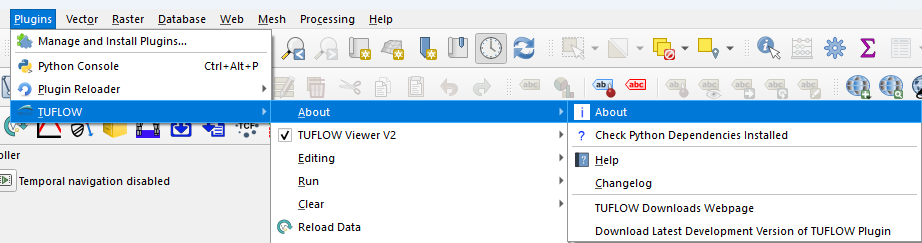
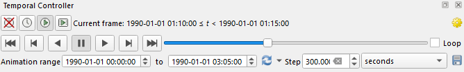
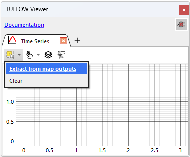
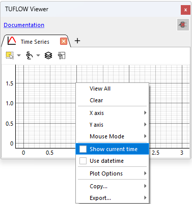
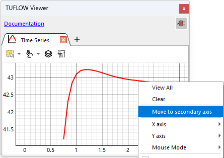

This page describes how to get started with the new TUFLOW Viewer which is currently in beta release as part of the 2026.0.0-beta version of the TUFLOW Plugin for QGIS.
This page will interchangeably refer to the new viewer as either TUFLOW Viewer V2 or simply TUFLOW Viewer. They should be taken to mean the same thing (i.e. the new version of the viewer). The current (or old) version of the viewer will be referred to as the legacy TUFLOW Viewer.
TUFLOW Viewer operates within QGIS and relies on a range of QGIS and Python dependencies, most of which are satisfied by using the latest QGIS version. The following section describes these requirements in more detail.
There isn't a definitive answer to the minimum version of QGIS required to use the TUFLOW Viewer as it depends on how QGIS was installed and what operating system is being used. As a general guideline, it is recommended to use at least QGIS 3.38, or QGIS 3.34.13 LTR if using long term release builds.
The limiting factor is typically the Python environment that is bundled with QGIS. See the Python Environment section below for more details.
Users can download QGIS from the official QGIS website. It is also possible to install QGIS via the OSGeo4W installer, however it is important to ensure that the required Python libraries are checked on during the installation steps as they are off by default in this method.
Note, the TUFLOW Viewer is supported in both the current stable QGIS builds and in the experimental Qt6 builds. It will also be available in QGIS 4.x when released. Even once QGIS 4.x is release, it will continue to support QGIS 3.x versions for the foreseeable future.
QGIS includes its own embedded Python environment with a number of external dependencies already installed. However, there are some minimum Python requirements which are required to use the TUFLOW Viewer that are mostly affected by the QGIS version or how QGIS was installed.
The TUFLOW Viewer requires Python 3.9 or later and the pandas library to be available (the latter is typically the limiting factor) and it is also recommended to have the netCDF4 library installed. It is possible to install pandas on older QGIS versions using the OSGeo4W Shell command window by running the setup utility (search "osgeo4w shell" under the start menu, enter "setup" in the shell and press return, then follow similar steps as this guide starting at Step 3: QGIS_Installation_with_OSGeo4W). However, upgrading to the latest version of QGIS or the latest QGIS LTR is the easiest method and recommended.
It is possible to check what version of Python is installed and if pandas and other recommended Python libraries are available by using the TUFLOW Plugin About dialogue:

Installing and Switching to the New TUFLOW Viewer¶
The TUFLOW Plugin is currently in a beta release and is not yet available via the QGIS Plugin Manager. Instead, the beta release replaces the development version and users can download the beta release following the steps below, or by following the instructions on this wiki page how to install the latest development version of the TUFLOW Plugin.
For the steps below, an existing installation of the TUFLOW Plugin must be present, otherwise please follow the steps in the wiki page linked above.
Download the latest development version from within QGIS via the TUFLOW Plugin menu
Once the download is complete, click the Copy Path to Clipboard button to copy the path to the downloaded file to your clipboard
Open the QGIS Plugin Manager via Plugins → Manage and Install Plugins
Select the Install from ZIP tab on the left-hand side
Paste the copied link into the Zip file field and click Install Plugin
TUFLOW Viewer is currently an opt-in feature and is not enabled by default. It is also mutually exclusive with the legacy TUFLOW Viewer (i.e. only one viewer can be active at a time). To switch to the new viewer, please follow the steps below.
Under the TUFLOW plugin menu, check on the TUFLOW Viewer V2 option to enable the new viewer
To confirm if the new viewer has been activated (and the legacy viewer deactivated), check for the legacy TUFLOW Viewer icon in the TUFLOW toolbar which will be replaced with the time-series icon for the new TUFLOW Viewer
TUFLOW Toolbar with the legacy TUFLOW ViewerTUFLOW Toolbar with the new TUFLOW Viewer
Note, any open results loaded with the legacy TUFLOW Viewer will need to be closed and re-opened with the new viewer.
The new TUFLOW Viewer tries to integrate itself with QGIS a lot more closely than the legacy viewer, using native QGIS controls where possible and extending QGIS functionality behind the scenes where needed. It does this without adding any new widgets or user interfaces (excepting the plot widget) which has the benefit of making it feel less like a separate tool and more like an extension to the core QGIS functionality.
To this end, loading an XMDF result file is as simple as dragging the .xmdf file from Windows File Explorer into QGIS. Once opened, the QGIS temporal controller is automatically opened and configured and can be used to adjust the output timestep. The active data type can be changed by using the layer properties. It is highly recommended to use the Styling Panel (rather than the properties dialogue) which can be toggled on and off by pressing F7 or Ctrl+3 on the keyboard.
The same is true for other supported mesh formats, for example the .nc NetCDF mesh format. The method for opening is also true for NetCDF grid results written by TUFLOW.
The legacy TUFLOW Viewer button was replaced when switching to the new viewer with the time-series button which is used to open the plot widget in the new TUFLOW Viewer.
Once opened, the Data Types menu can be used to select the desired data type to plot, and the Draw Tool can be used to select the location on the map to plot from.
The starting plot type is a time-series plot, but this can be changed by right-clicking the plot tab and selecting the desired plot type from the context menu. Alternatively, a new plot tab can be opened by clicking the + button in the tab strip and selecting the desired plot type from the context menu.
Note, it is important to ensure that the workspace and results are in the correct projection and not incorrectly using a default CRS such as WGS84. The new TUFLOW Viewer will convert spherical distances to metres using the ellipsoidal method if a spherical system is being used. This will cause issues (most likely a blank plot) if the source data is already in a Cartesian projection and does not require conversion.
Similar to XMDF results, TPC results can be loaded by dragging the .tpc file from Windows File Explorer into QGIS. This will automatically load the PLOT GIS layers into QGIS and results can now be plotted. Instead of the Draw Tool, the Selection Tool should be used and must be active before selecting any 1D elements on the map to plot from.
The new TUFLOW Viewer supports all the formats the legacy TUFLOW Viewer supported plus a few more. For more information on how to load in other result formats, check files, plotting options, and any other available functionality, please refer to the User Guide section of the documentation.
Although most of the core functionality is available, not all features and tools from the legacy TUFLOW Viewer have been ported across to the new TUFLOW Viewer yet. A list of planned features and improvements can be found in the TUFLOW Viewer Roadmap.
The first, and main, difference between the legacy TUFLOW Viewer and the new TUFLOW Viewer is the removal of the docking widget interface. The new viewer has no interface and instead relies on native functionality within QGIS to provide a more integrated experience. This means there is no longer a dedicated time slider provided by TUFLOW Viewer and the user should use the QGIS temporal controller to adjust the output timestep.

QGIS Temporal Controller
Likewise, when selecting the active result types, the QGIS layer properties should be used to adjust which data type is active for mesh based results. It is recommended to use the Styling Panel rather than the properties dialogue, as this can be toggled quickly with the F7 or Ctrl+3 keyboard shortcuts and does not lock the interface with a modal dialogue.
QGIS Styling Panel
Note, the new TUFLOW Viewer removes the interface, but is still working in the background to provide a better experience when working with TUFLOW results in QGIS. As an example, the TUFLOW Viewer enables XMDF files to be opened in QGIS by dragging and dropping them directly from Windows File Explorer. It also allows results to be dragged from one QGIS instance to another.
Removal of the docking widget interface as mentioned above.
The new viewer is built on top of the PyTUFLOW Python library which provides a more robust and efficient method for reading TUFLOW results. Users should notice an improved performance all round, especially when loading and plotting from large ESTRY result files. Large XMDF files are limited, as they were in the legacy TUFLOW Viewer, by the performance of the underlying QGIS library. Although PyTUFLOW will perform better caching of data in the background, so users should still notice an improvement here too when replotting previously plotted locations (e.g. when scrolling backwards and forward through timesteps on a section plot).
Each loaded result is tied directly to a specific GIS layer, or set of GIS layers. For example, an XMDF is linked to the mesh layer, and the TPC result is tied to the _PLOT_ layers that are loaded when the TPC file is opened. Once those layers are removed from QGIS, the results are also unloaded, this means that they will no longer be available for plotting. The biggest affect that this might have is when loading multiple TPC results which will load in multiple sets of _PLOT_ layers. The plot layers may be identical (e.g. when loading in results from different events), however the user must keep all the layers in QGIS to keep the results available for plotting. It is still possible to plot the different results by selecting a channel from a single _PLOT_ layer, as long as the ID is present in the other TPC results.
This section is designed to give a brief overview of some of the more specific differences between the legacy and new viewer for users who are familiar with the legacy TUFLOW Viewer. It is not an exhaustive list, but covers some of the more notable changes so users can get started quickly without reading through the entire user guide.
Map output - plot "from map multi": In the legacy TUFLOW Viewer, there was a specific plotting option to add multiple points, or multiple lines, to a single-plot. This is now inherently supported by the Draw Tool without any special options required. Each time the user clicks on the map, a new point is added to the plot (or a similar experience with lines when plotting sections). These locations can be redrawn by holding down Ctrl and clicking on the map again. Locations can also be individually toggled or removed via the Draw Tool menu.
Map output - plot from "layer selection": This option can be found under the Selection Tool menu as Extract from map outputs.

Time-series - selecting channels: The Selection Tool must be active before selecting any times-series features to plot from. This has the benefit being able to be toggled off and then the QGIS selection tool can be used for other tasks without interfering with what is being plotted.
Time-series plot - show current time: This option can be found under the time-series plot context menu. The vertical time indicator line is also interactable and can be dragged to change the current time.

Time-series plot - use datetime: This option can be found under the time-series plot context menu.
Secondary axis: Plot items can be moved to the secondary axis by right-clicking the item on the plot and selecting Move to secondary axis. They can be moved back to the primary axis in the same way. This works a little differently from the legacy behaviour where the entire result type was moved to the secondary axis. It is now done by specific plot item, so velocity from one location can be on the primary axis, while velocity from another location can be on the secondary axis.

Plot navigation: Plot navigation (pan and zoom) is always active in the new TUFLOW Viewer. Use the left mouse button (or middle mouse button) to pan the plot, use the right mouse button to scale the plot, and use the mouse wheel to zoom. For secondary axes, hold down Shift or Ctrl to pan/zoom the secondary axis. Alternatively for secondary axes, the user can interact with the axis ticks directly to pan/zoom the secondary axis (e.g. left click and drag on the axis ticks on the right-hand side to pan the secondary axis up and down).
Freezing the axis limits: If the plot axes are changed by the user (e.g. panning or zooming), the axes will remain fixed to those limits. The auto limit behaviour can be restored by clicking auto button in the bottom left of the plot window. Plot limits can also be manually set by right-clicking the plot window and looking under the X axis or Y axis sub-menus (not available for the secondary axis yet).
Exporting data: The export and copy data options are now found under the plot context menu.
Mesh - saving default style: In the legacy TUFLOW Viewer, it was possible to save the current style to be the default style for the given result type. This is still possible and can be found by right-clicking the mesh layer in the QGIS Layers Panel and selecting the TUFLOW Viewer submenu. The style is cached into a local folder and unlike the legacy viewer, will survive plugin updates.


 in the TUFLOW toolbar which will be replaced with the time-series icon
in the TUFLOW toolbar which will be replaced with the time-series icon 
 for the new TUFLOW Viewer
for the new TUFLOW Viewer


 without any special options required. Each time the user clicks on the map, a new point is added to the plot (or a similar experience with lines when plotting sections). These locations can be redrawn by holding down
without any special options required. Each time the user clicks on the map, a new point is added to the plot (or a similar experience with lines when plotting sections). These locations can be redrawn by holding down  menu as Extract from map outputs.
menu as Extract from map outputs. in the bottom left of the plot window. Plot limits can also be manually set by right-clicking the plot window and looking under the X axis or Y axis sub-menus (not available for the secondary axis yet).
in the bottom left of the plot window. Plot limits can also be manually set by right-clicking the plot window and looking under the X axis or Y axis sub-menus (not available for the secondary axis yet).